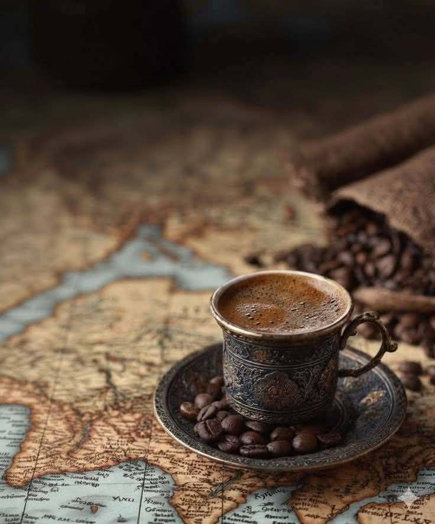
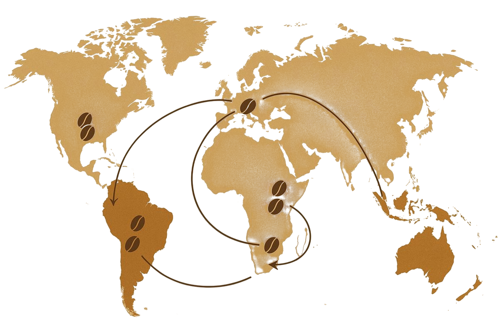

Рождение
кофе
По легенде, примерно в 850 году пастух Калди заметил, что его козы скачут от энергии, поев красных ягод с дикого куста. Настоятель местного монастыря приготовил из них первый отвар, чтобы монахи не засыпали на ночных молитвах.
Читать далее →Легенда о
Калди
Молодой пастух Калди заметил, что его козы после поедания листьев и красных ягод с дикого куста становились невероятно энергичными и не спали ночью. Наблюдая за ними, он понял: причина их «танцев» скрыта в этих плодах. Так, благодаря внимательности пастуха, человечество открыло кофе.
Читать далее →

Кофе в
Аравии
На Аравийском полуострове кофе обрел свое истинное лицо. Если в Эфиопии его считали дикой ягодой, то в Аравии (прежде всего в Йемене) к XV веку его превратили в тот горячий обжаренный напиток, который мы знаем сегодня.
Читать далее →От ягод к зернам
Долгий путь к совершенству

Ягода

Зеленые
зерна

Обжарка

Помол

Кофе
Кофе
завоевывает мир
Экспансия кофе началась в XVII веке, когда европейские купцы смогли разрушить арабскую монополию. Напиток мгновенно превратился из экзотики в главный двигатель мировой торговли.
Читать далее →
родина эспрессо, превратившая чашку на бегу в мировой культ
магия восточного ритуала и кофе, томленый на раскаленном песке
роскошь венских залов, соединившая кофе с культурой и искусством
эстетика парижских террас, где кофе — это стиль жизни
Кофе в
Европе
Кофе завоевал Европу в XVII веке, превратившись из экзотического «горького лекарства» в главный напиток мыслителей, торговцев и политиков. Его появление вызвало настоящую культурную и интеллектуальную революцию.
Читать далее →Кофе сегодня
Сегодня чашка кофе — это уже давно не просто доза кофеина, чтобы дожить до обеда. Это целая культура, очень похожая на мир хорошего вина. Нам важно знать, откуда приехало зерно, на какой высоте оно росло и как его обрабатывали.
Сами кофейни из унылых точек «кофе с собой» превратились в уютные городские убежища и лаборатории вкуса. Сюда приходят за атмосферой, красивой молочной пеной и эстетикой. Каждый глоток сегодня — это маленькая пауза в безумном ритме дня, наш личный и очень приятный ритуал.